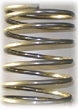
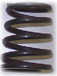
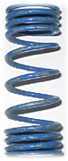
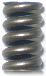
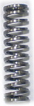
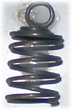

AMS fabrique différents types de ressorts de compression :
Ressorts de compression
Les diamètres de fil utilisés pour la fabrication des ressorts de compression sont : de 0,15 mm à 3,7 mm en série, nous enroulons également du fil carré.
Nuances matière : SM, SH, DH, classe II, Inox, bronze
Un traitement thermique de revenu est necessaire après enroulement du ressort de compression, cela permet de relaxer les contraintes résiduelles
d'enroulement et d'augmenter la résistance du fil. Lors de cette opération, le diamètre et la longueur du ressort de compression varient.
Nous utilisons différents traitements de surface : delta seal, dacromet, zingage, phosphatation, bézinal, galvanisation. Ces procédés garantissent des protections contre la corrosion et la bruyance du ressort.
La raideur du ressort détermine la résistance du ressort lors de sa compression. Généralement elle se calcule par
rapport à 2 courses de compression.
Les paramètres influents du ressorts sont : La nuance matière, le diamètre du fil, le diamètre et la longueur du corps.
|  |  |  | |
Ressort de compression en SH galvanisé diamètre du fil 2,7 mm |
Ressort de compression en fil trempé VDSICR diamètre du fil 3,0 mm |
Ressort en SH avec 2 raideurs différentes. diamètre du fil 2,7 mm |
Ressort en bronze ø fil 0,2 mm ø corps 2,7 mm |
|  |  |  |
Ressort
en inox
diamètre
du fil 2,1 mm avec meulages extrémités |
Ressort de compression en SH fil carré section de 1,4 x 1,4 mm |
Ressort
en SH
diamètre du fil
|
© 2008-2011 fabricant de ressorts AMS (Ateliers Mécaniques de Saucourt) | Mentions légales
création site